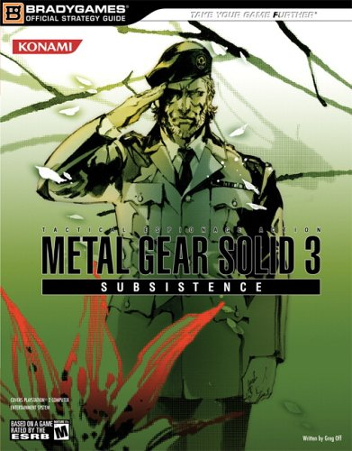
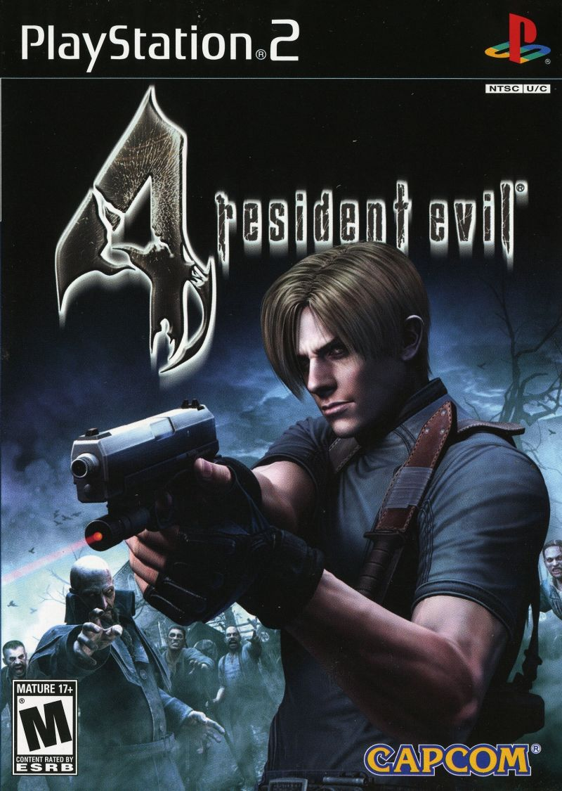
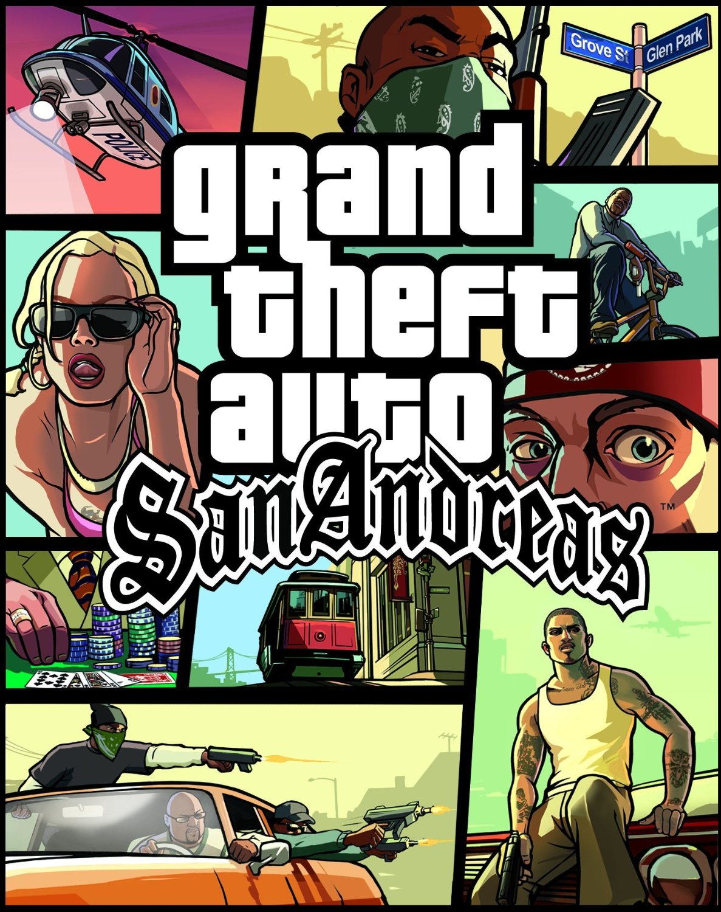

-
Metal Gear Solid 3: Subsistence

-
Shadow of the Colossus
-
Resident Evil 4

-
God of War 2
-
Grand Theft Auto: San Andreas

Se passa na guerra fria na russia, em que sua missão é impedir a criação de uma arama letal de destruição, o jogo tem uma historia vasta, a gameplay do jogo é você sendo furtivo eliminando os alvos cautelosamente ou só sair avoado batendo e atirando em todo mundo enquanto uma musíca frenetica fica tocando.
Video de umas peripécia acontecendo no jogo kkk

O jogo é uma obra de arte, com uma bela ambientação e música sonora em um mundo vasto e vazio em que você deve derrotar 16 colossos gigantes para ressucitar uma mulher, a sensação de escalar um colosso e abate-lo é incrivel. Ele é cheio de misterios e teorias sobre a história.
Primeiro colosso:
Se controla o grande Leon, que foi enviado em uma missão para resgatar a filha do presidente dos EUA e sai atirando nos zumbi/ganados e enfrenta uns bicho estranho, e tem aquela musiquinha braba quando se vai salvar o jogo.
Primeiro capitulo do jogo:
God Of War 2, se começa o jogo todo pistola poderoso e já chega matando a estatua da nota real gigante com a música mó braba, ai o resto do jogo se só sai sabugando os bicho com o famigerado combo QUADRADO, QUADRADO, TRIANGULO e tacando choquezinho no normal game, ai sai matando uns Deuses gregos.
Primeira cutscene:
Um dos primeiro jogos que experienciei na vida, naquela epoca poder experienciar um mundo aberto vasto podendo fazer varias coisas e causar o caos na cidade enquanto ouve uma radio top era tudo de bom, além do jogo possuir uma otima historia.
Resumo mais ou menos da história hehe: